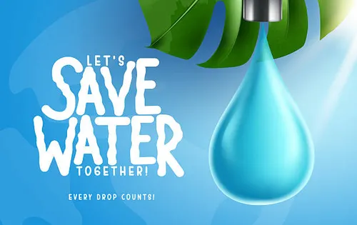

ഗ്രാമ പഞ്ചായത്ത് കവറേജ്
Pipped Water Supply Schemes
Piped Water Supply HHs
PWSS Population Benefited
Sanitation Structure
RWH Covered GPs
RWH Connections
RWH Population benefited
ഗ്രാമീണ ജനതയുടെ ജല, ശുചിത്വ ആവശ്യങ്ങൾ നിറവേറ്റുന്നു. 5884 സ്കീമുകളും 4.52 ലക്ഷം ഹൗസ് കണക്ഷനുകളും ഉള്ള ജലനിധി കേരളത്തിലുടനീളമുള്ള 227 ജിപികളിലായി 22.26 ലക്ഷം ജനങ്ങൾക്ക് ഉപകാരപ്പെടുന്നു . കേരളത്തിലെഗ്രാമീണ മേഖലയില് കുടിവെള്ള വിതരണവും ശുചിത്വ സൗകര്യങ്ങളും നല്കുന്ന ഒരു പ്രധാനപ്പെട്ട ഏജന്സിയാണ് കെ.ആര്.ഡബ്യു .എസ്സ്.എ. ഗുണഭോക്താക്കള് പദ്ധതികളുടെ ആസൂത്രണത്തിലും നിര്വ്വഹണത്തിലും പങ്കാളികളാവുകയും തുടര് നടത്തിപ്പ് പൂര്ണ്ണമായും നേരിട്ട് നടത്തുകയും ചെയ്യുന്ന ഒരു പുതിയ മാതൃക ജലനിധി പദ്ധതിയിലൂടെ കെ.ആര്.ഡബ്യു .എസ്സ്.എ വിജയകരമായി നടപ്പിലാക്കി.
കൂടുതൽ അറിയുക